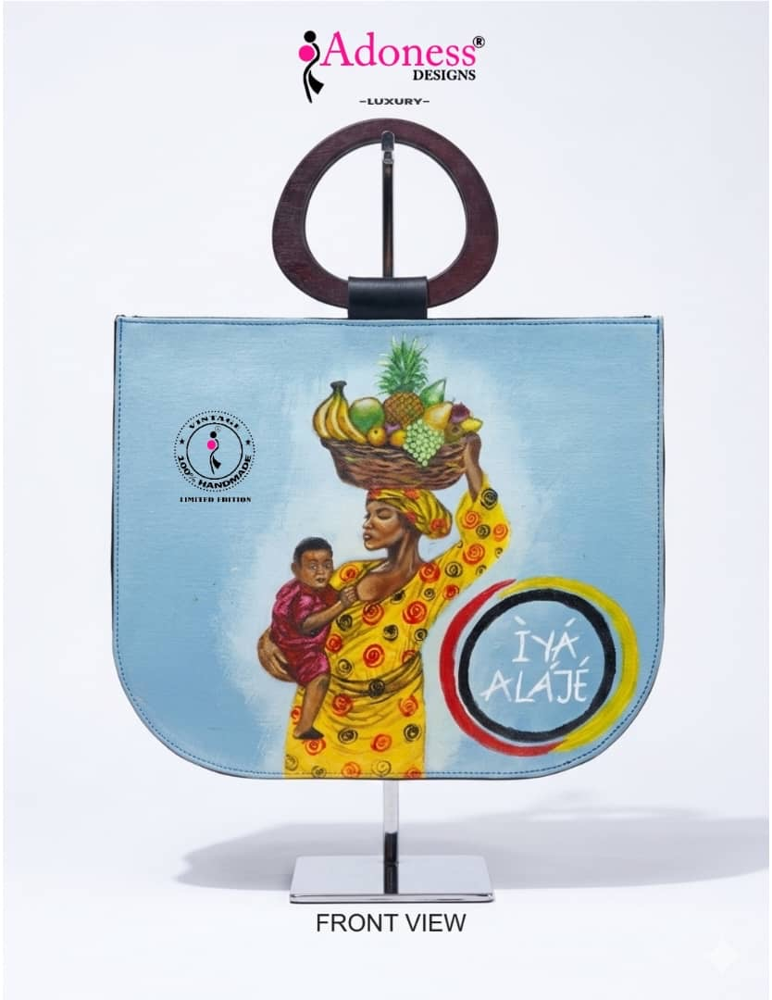
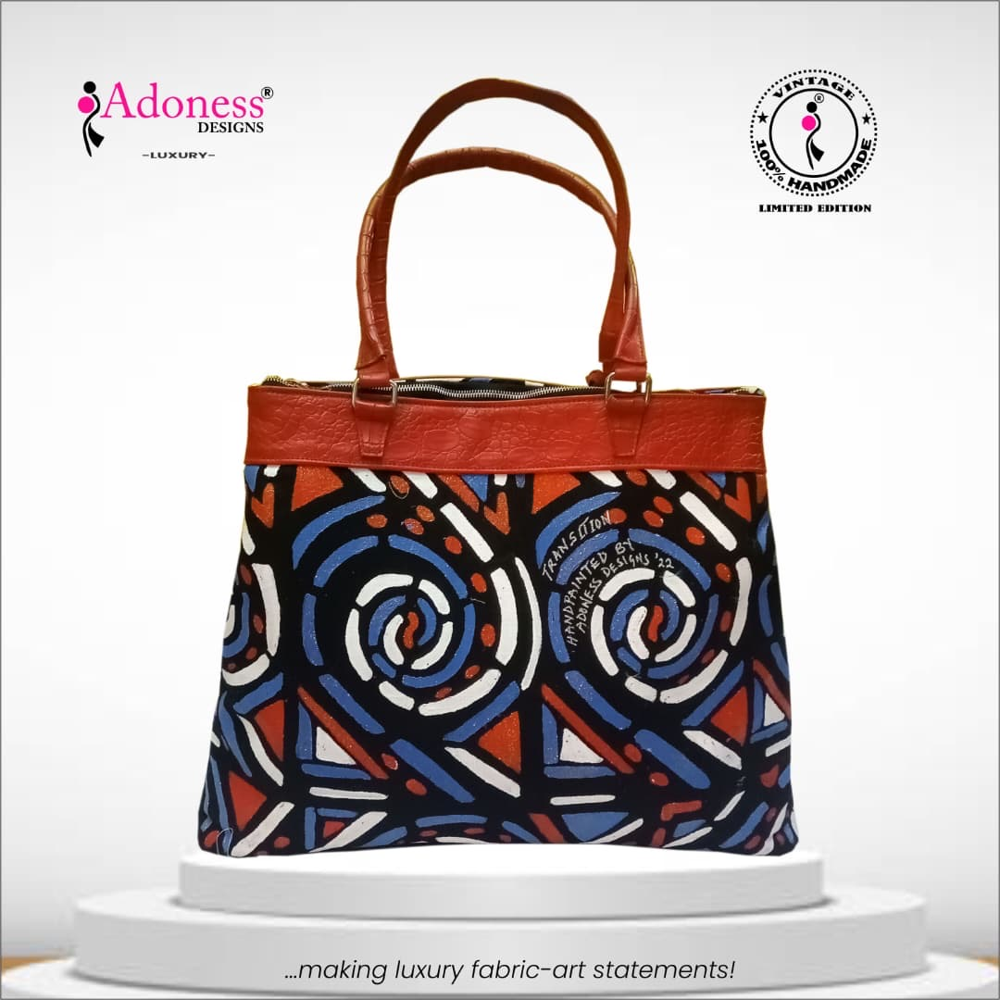
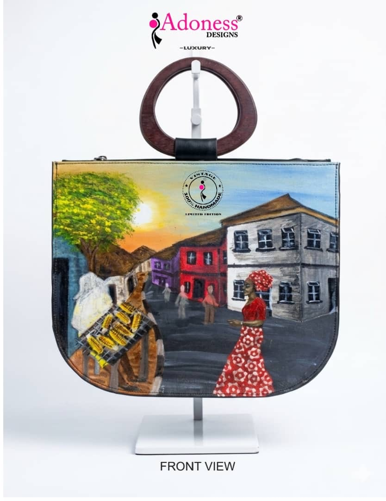
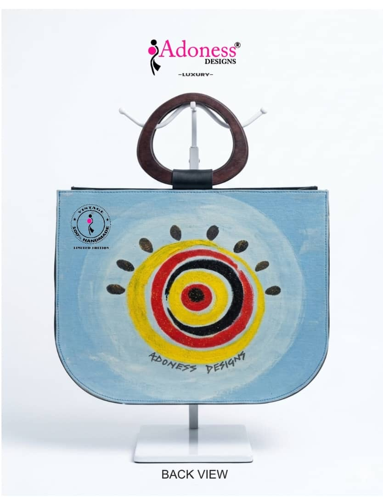

Painted futures, woven by hand.
Original fabric art shaped into bags and objects, made by hand in Nigeria. Move your cursor across the pieces and they answer.
See the work


Ìyá Aláje
A mother carries her child and the day’s fruit. Painted on fabric, finished with a sculptural wooden handle.
Story pieceCurrent / Countercurrent
Spirals in cobalt, rust and ivory, pulling in two directions at once.
Pattern study
Evening on the Street
A whole town at dusk, held in a bag you can carry out the door.
Story piece
Portal / 01
Rings of red, yellow and black opening onto a pale blue sky.
Pattern studyÌná Aláje
Sharp triangles in red, black and ivory. The loudest piece in the room.
Pattern studyIn the round.
Follow the painted surface around the curve of the bag.
Motion study
Made slowly, stitch by stitch.
Every piece starts as an idea and ends as an object with its own marks. Three steps, always in this order.
- 1ImagineSketches, stories and memories set the direction.
- 2ShapeFabric is cut, sewn and built into form.
- 3PaintColour and detail give each piece its character.
Bring us fabric you already love.
Adoness can transform a piece you own through hand-painted design. Ask the studio what’s possible for your fabric.
Ask about a makeoverWe make fabric works of art to beautify people and their spaces, with a story in every thread.
Bidemi Odunsi
Entrepreneur, fine artist and creative director of Adoness Designs. After training in fashion design and fine art, she began the fabric-art initiative in 2017. Her work draws on dreams, nature, culture and faith, and in 2022 she won a Flourish Africa Women Initiative grant.
Find the piece that feels like you.
Interested in a featured work, a custom piece or a makeover? Studio contact details will be added here once confirmed with the client.